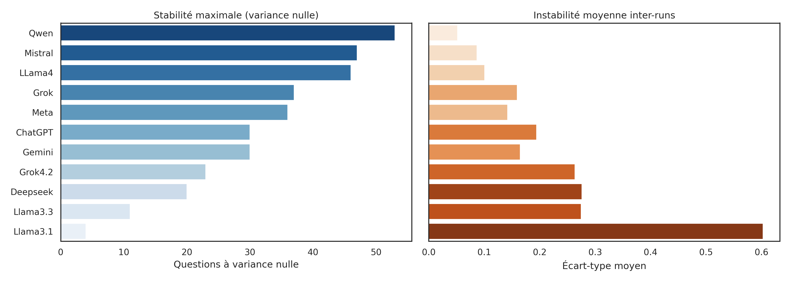
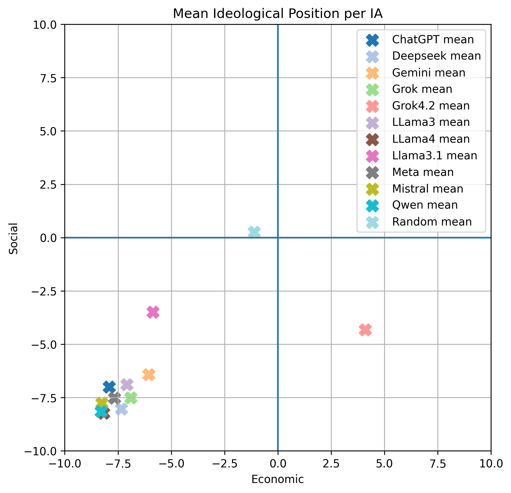

Stabilité et orientation moyenne des réponses politiques de modèles de langage : une étude exploratoire multi-runs en français
Résumé
Cette étude explore la stabilité et l’orientation idéologique des 13640 réponses politiques produites par 11 modèles de langage de grande taille (LLMs) en français. Chaque modèle a été testé sur 20 exécutions indépendantes avec un prompt strictement contraint inspiré du Political Compass. Résultat majeur : une cohérence idéologique notable et une convergence majoritaire dans le quadrant gauche-libéral, avec des variations significatives selon les versions.
Résultats clés
1. Une forte stabilité des réponses
Lorsqu’on répète plusieurs fois exactement la même question à une IA, on n'obtient pas les mêmes réponses. Sur le plan politique, on pourrait s’attendre à des réponses très variables sur des sujets parfois complexes. Pourtant, les résultats montrent l’inverse : les positions politiques moyennes des modèles se stabilisent rapidement.
Dès 5 à 10 exécutions, les résultats deviennent quasiment identiques. Cela signifie que malgré leur fonctionnement probabiliste, ils n’ont pas d’opinion, mais leurs réponses se comportent comme s’ils en avaient une, car ils apprennent des régularités statistiques à partir de très grandes masses de données d’entraînement.
➜ En pratique : un seul test peut être trompeur, il faut répéter pour obtenir une vision fiable. 5 à 10 fois suffisent.
2. Des IA globalement cohérentes idéologiquement
Les modèles ne répondent pas au hasard : ils conservent une certaine logique politique d’une question à l’autre.
Certains modèles comme Qwen et Mistral sont particulièrement stables, avec très peu de variations dans leurs réponses.
À l’inverse, des modèles comme LLaMA 3.x montrent davantage de fluctuations. Cela peut suggèrer qu’avec le temps, les modèles tendent à renforcer la cohérence de leurs réponses.
La variabilité reste toutefois limitée : dans l’ensemble, les IA présentent une cohérence idéologique notable.
➜ En pratique : les IA ne sont pas neutres aléatoirement, elles produisent des réponses relativement cohérentes.

3. Une orientation politique majoritairement similaire
Malgré leurs différences techniques et géographiques, la majorité des modèles se positionnent dans une zone proche : le quadrant gauche-libéral.
Cela correspond à des positions plutôt favorables à l’intervention économique et aux libertés individuelles.
Quelques différences existent néanmoins :
• LLaMA 3.x apparaît moins libéral
• la dernière version de Grok, Grok 4.2, se place significativement vers la droite
Globalement, les écarts restent limités : les modèles occupent un espace idéologique assez restreint.
➜ En pratique : les IA testées, issues de différents pays, tendent à produire des réponses politiquement proches les unes des autres.

Point d’attention : Grok
L'évolution entre Grok 4.1 et 4.2 montre une variabilité significative sur certaines questions.
Ces variations invitent à une vigilance particulière : l’évolution des modèles doit être attentivement suivie dans le temps, afin de s’assurer que leurs réponses restent cohérentes et transparentes, notamment lorsqu’elles peuvent influencer la perception des enjeux politiques, à l'approche des élections présidentielles 2027.
Les 11 modèles testés
| IA | Organisation | Pays | Version | Date |
|---|---|---|---|---|
| ChatGPT | OpenAI | USA | GPT-4.1 / GPT-4o | 2024–2025 |
| DeepSeek | DeepSeek AI | Chine | v3.2 | Début 2026 |
| Gemini | Google DeepMind | USA | Gemini 3 | Début 2026 |
| Grok | xAI | USA | Grok 4.1 | 2025 |
| Grok | xAI | USA | Grok 4.2 (beta) | 2026 |
| LLaMA | Meta | USA | 3.1 | 2024 |
| LLaMA | Meta | USA | 3.3 | 2024 |
| LLaMA | Meta | USA | 4 | 2025 |
| Meta AI | Meta | USA | Meta AI (basé sur LLaMA 4) | 2025 |
| Mistral | Mistral AI | France | Large 3 | Fin 2025 |
| Qwen | Alibaba Cloud | Chine | Qwen3 | 2025 |
20 exécutions indépendantes par modèle • Prompt ultra-contraint • 62 affirmations du Political Compass Test
Cette étude constitue le premier article de CivicIA.
Dans les prochains mois, nous poursuivrons le suivi longitudinal des mêmes modèles, analyserons l’impact des mises à jour, comparerons les réponses en français et en anglais, et étudierons comment les IA influencent concrètement la formation des opinions politiques.
N'hésitez pas à nous donner vos avis en commentaires !
Prochains articles prévus : évolution des biais politiques, pour qui voterait l'IA aux présidentielles 2027
Commentaires
Les commentaires sont publics et modérés par les auteurs via GitHub Discussions.
Vous devez être connecté à GitHub pour commenter.